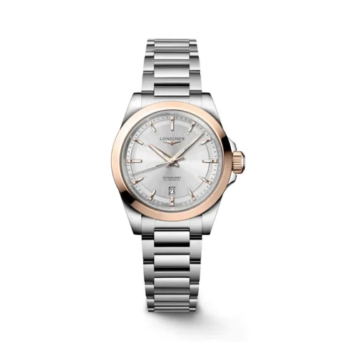
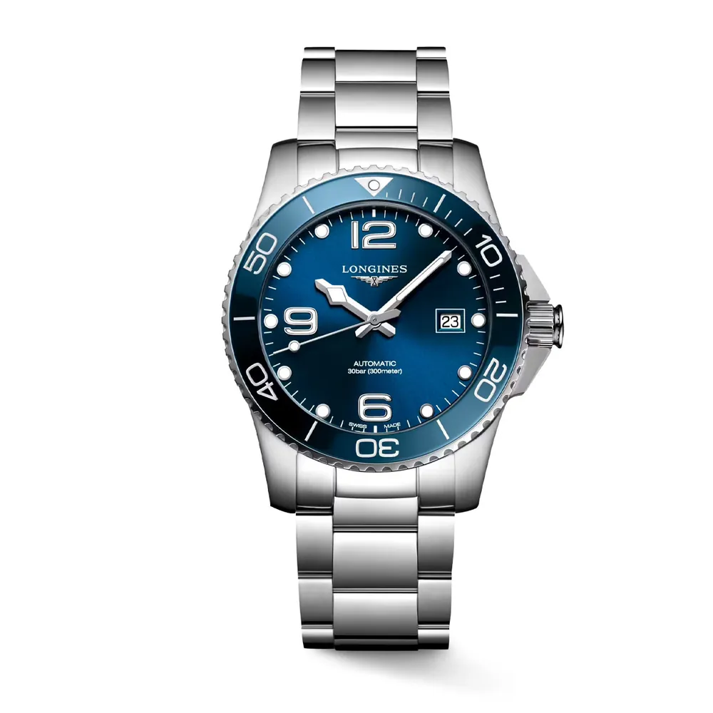
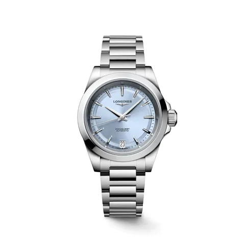
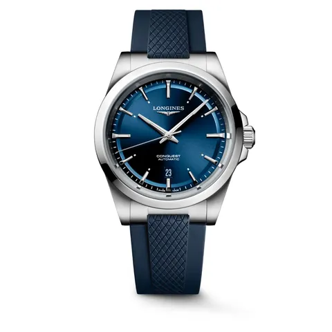
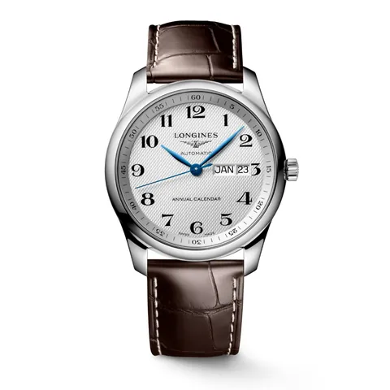

LonginesL33205726

Longines
HYDROCONQUEST – Ref. L3.781.4.96.6 Disponible en 39 mm , 41 mm y 43 mm
El Longines HydroConquest es un icono dentro de la relojería deportiva suiza, diseñado para quienes exigen precisión, rendimiento y elegancia incluso en las condiciones más extremas. Este modelo, con caja de 41 mm , combina acero inoxidable y un bisel de cerámica de alta resistencia, ideal para un uso intensivo tanto dentro como fuera del agua.
En su interior, un movimiento automático vibra a 25.200 alternancias por hora y ofrece una generosa reserva de marcha de hasta 72 horas , asegurando fiabilidad y continuidad.
La esfera azul con efecto rayos de sol , acompañada de índices tratados con Swiss Super-LumiNova® , proporciona una excelente legibilidad incluso en entornos de baja luz. El reloj incluye función de fecha y está equipado con corona a rosca y bisel giratorio unidireccional , características esenciales para buceo y actividades acuáticas.
Gracias a su resistencia al agua de hasta 30 bar (300 metros) y su cristal de zafiro antirrayaduras con tratamiento antirreflejos en ambas caras , este reloj está preparado para cualquier desafío.
Se completa con un brazalete de acero inoxidable que incorpora un doble cierre desplegable de seguridad , aportando firmeza y comodidad en cada movimiento.
Precio y disponibilidad, en la joyería.Te lo confirmamos por WhatsApp o sentados en la mesa.

LonginesL33205726

LonginesL34304926

LonginesL48304929

LonginesL29104783